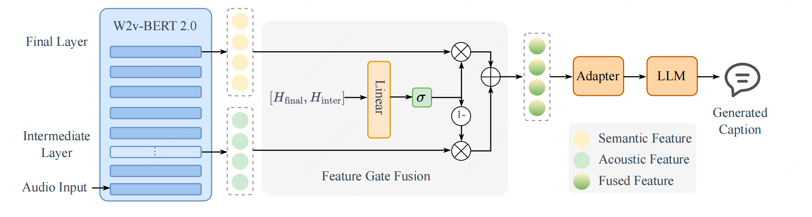
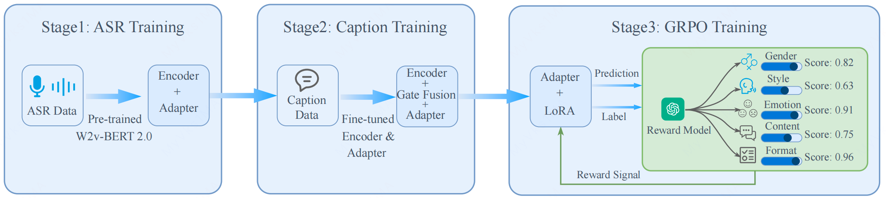

Abstract
Effective voice captioning requires analyzing both linguistic content and paralinguistic attributes. However, existing methods either rely on discrete classification paradigms or restrict generative modeling to a single emotional dimension. Furthermore, token-level cross-entropy loss during fine-tuning is often suboptimal for realizing their expressive potential. We introduce VoiceCap, a voice captioning framework empowered by self-supervised representations and reinforcement learning. Specifically, we design a gate fusion module that adaptively integrates acoustic details with semantic features, establishing a comprehensive representation. To overcome token-level constraints, we incorporate a Group Relative Policy Optimization (GRPO) based reinforcement learning strategy, leveraging multi-dimensional objective rewards to directly optimize the generation policy. Experiments show that VoiceCap achieves superior paralinguistic performance, advancing comprehensive voice captioning.
Method

Figure 1: Overview of proposed VoiceCap.

Figure 2: Three-stage training strategy of VoiceCap.
Audio Samples
| Audio Sample | Generated Caption |
|---|---|
|
1
|
说话人是一位女性，声音清晰且略带尖锐，音色偏中高，语速较快，语气急促并带有明显的焦虑和担忧。她反复强调“不行不行”，表达了对贸然在网上发表内容可能带来的后果的强烈反对和不安，语调中还流露出紧张和急切的情绪。整体表达直接、果断，意图在于劝阻他人不要冒然将信息发布到网上，以免造成不良影响。 |
|
2
|
说话人是一位女性，声音尖细且带有颤抖感，语速较快，语气急切而充满焦虑和紧张。她情绪表现为明显的担忧和劝阻，试图通过恳求和安抚来阻止对方的冲动行为。她在表达“你别冲动，你听我说”，意图是希望对方冷静下来并认真听取她的解释或建议。整体语音风格急促、带有紧迫感，展现出强烈的关切和努力说服对方的情绪。 |
|
3
|
说话人是一位女性，声音沙哑且带有明显的颤抖和气息感，语调低沉而急促，情绪表现为强烈的悲伤、懊悔与自责。她在表达“当时正在气头上”时，语速较快，语气中透出压抑的痛苦和反思，仿佛在追忆一段因冲动而后悔的经历。整体语音透露出情绪波动和内心的挣扎，结尾处声音逐渐哽咽，情感极为真挚。 |
|
4
|
说话人是一位女性，声音颤抖且带有明显的哭腔，音色沙哑、气息不稳，语速缓慢，表达出深切的悲伤和绝望情绪。她用近乎哽咽的方式说出“你是妈唯一的希望”，语气中充满哀伤与无助，情感十分真挚。整体说话风格沉重，透露出对某人的强烈依赖和失去希望的痛苦。 |
|
5
|
说话人是一位男性，声音清晰且音色明亮，语调上扬，带有明显的惊讶和兴奋情绪。他以标准普通话表达，语速适中，语气中流露出惊喜与亲切感，像是在发现熟人时的自然问候。内容为“哟这不是徐少爷吗”，表达了对对方身份的确认和热情打招呼的意图。 |
|
6
|
说话人是一位女性，声音清晰明亮，音调偏高，语速适中。她先发出一声轻快的“哦”，随后以愉快、轻松的情绪说出“今天礼拜六”，语气中带有明显的惊喜和愉悦感。整体表达自然流畅，情绪积极，像是在开心地确认当天是礼拜六，内容简单直接，展现出轻松愉快的心情。 |
|
7
|
说话人是一位男性，声音低沉且浑厚，音色成熟稳重。他的情绪表现为满意和欣赏，语调中带有肯定与尊敬的意味。说话风格简洁直接，语速适中，表达出对某事或某人的认可与鼓励。他先以“好样的”为开头，语气充满赞赏，随后称呼“团长”，语气恭敬，整体展现出对上级的尊重和积极评价。 |
|
8
|
说话人是一位成年男性，声音清晰自然，音色中低沉且略带沙哑，语调轻松幽默，带有调侃和戏谑的意味。他以普通话表达，语速适中，语气中明显流露出轻松、愉快和玩笑的情绪，整体风格亲切随意。内容上，他在用“你是不是说你是那森林的兔子”这样的问题与对方互动，意图是以玩笑的方式进行对话或澄清对方的身份。 |
|
9
|
说话人为女性，声音尖锐且音调偏高，语气强烈并带有明显的威胁和报复意味。她以快速、有力的语速表达出强烈的愤怒与不满，情绪中夹杂着愤怒、蔑视和报复心理。说话内容为“我得让他知道知道什么叫痛并快乐着”，展现出对对方施加痛苦的决心，整体风格充满攻击性和威慑力。 |
|
10
|
说话人是一位成年男性，声音低沉且富有张力，音色浑厚而略带沙哑。他的情绪表现为焦虑和愤怒，语速较快，语气急促且带有质问感，整体表达出强烈的不满与质疑。在讲话过程中，他反复追问“我们胜利了吗？到了庆祝的时候了吗？”，强调了对当前状况的担忧和对庆祝时机的否定，展现出明显的不满和压力。 |
|
11
|
说话人是一位女性，声音清晰柔和，语调平稳且带有轻微的关切和鼓励。她的情绪表现为平静、温和并略带关心，语速适中，表达出对对方的体贴和理解。她用简短的话语“没事，你去忙去吧”，传达出让对方安心去做其他事情的意思，整体风格显得亲切、安抚，展现出一种温柔的支持感。 |
|
12
|
说话人是一位成年男性，声音低沉且清晰，语调平稳，语速适中，吐字准确。情绪表现为平静和专注，没有明显的情感波动或激动成分。说话风格正式、客观，带有讲解或分析的意味，内容为“一种是看得上”，意图是在介绍或解释某个概念。 |